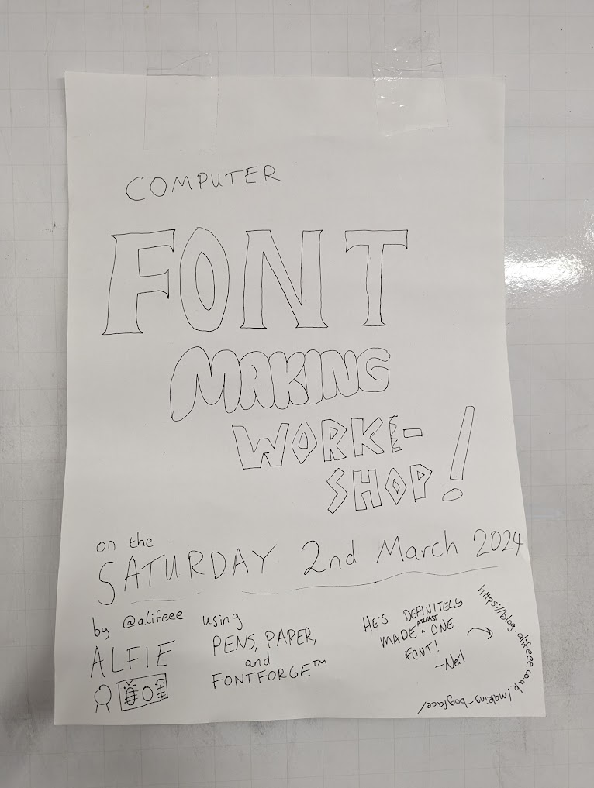

I ran a computer font-making workshop!
This week I ran a computer font-making workshop at my local hackspace. It was a bunch of fun, and I really enjoyed seeing the creativity come out of people via the medium of creating typefaces :)
Why?
Who, Where, When?
I ran the workshop at my local hackspace. I'd seen that they had run workshops before on knife-making and other things, and I thought it would be neat if I did something similarly collective. Often, people are together at the hackspace, which I enjoy in and of itself. But, it is extra neat if people can be together and all be working on similar things.
About three or four weeks ago, I decided to just "do it", and I made up a sign and put it up at the hackspace.

Some have pointed out an irony that a poster for a computer font workshop was handwritten...
As far as I was concerned, "a workshop" was not really an established idea. But that's part of the reason I like community spaces like the hackspace: I can pretend something is an established idea and people will believe it is.
I didn't start with a great plan, but rather started by motivating myself to create a plan (by putting up the poster). This turned out to be a nice method of motivation, as I had set a date for my "workshop", which forced me to consider what a "workshop" would involve.
What does a workshop involve?
I ended up giving a short presentation about why I like fonts, some things to think about when designing a font, and an overview of how to use FontForge, which is the program that I made BogFace in.
The presentation
I thought about using Google Slides to make a presentation. However, you can't use custom fonts, which was... kind of a killer for a font workshop.
I went with RevealJS, which I had seen one of my computer-loving lecturers use at university. It's quite neat to use, mainly because everything is written in HTML. I guess I am fate-bound to never use a WYSIWYG editor again.
The presentation is hosted at
https://alifeee.co.uk/font-workshop/, but since it is a website, I can also embed it here! Have a scuttle
around (press space to slow down progress.)
If I do another workshop in the future, I will probably update this a bit, and this embed would change :)
What people made
I helped five people make their own fonts. Each one went about it quite (or slightly, depending on how much you care about fonts) differently.
No method was wrong. Some methods were slower, fostering - I think - more appreciation for digital graphic work. All methods were very creative, and it was great to see different ways people went about making a font.
Described briefly, and each description written in their own font, here are the ways people created their fonts:
(Some are incomplete. Some will be updated as time passes.)
Auto-traced handwriting
Tanya¹ did what many designate the "classic move" in font-making: they made a handwriting font.
The method was to draw the letters a through z on paper and take a picture of it. Then, each letter was isolated into a bitmap image of each letter. potrace was used to convert the bitmap images into SVG images, which were then imported into FontForge, where they could be resized and moved around to look good.
Manually traced hand-designed letters
Ivanka¹ drew some guidelines on paper, and designed and drew block letters on the sheet. Then, they took a picture of the hand-drawn letters and digitised them manually, using the vector tools in FontForge.
Designed a Morse code font
Dragomir¹ designed a Morse font. You are reading it now.
Digitally designed letter forms
Katya¹ designed their letter forms entirely digitally, within FontForge. After a few, they were able to copy stylistic parts of letters to other letters, such as the caps of "b" and "d".
Stroke-expanded lines drawn via touchscreen
Tomislav¹ used their touchscreen laptop to draw the letters with a single stroke, and then used FontForge's "Expand Stroke" to turn the one-dimensional drawings into two-dimensional vector shapes.
I'd love to do another workshop!
I had a lot of fun helping people make fonts, through thinking about design to how to practically using tools. It was very interesting and cool to me that each person involved made their font differently.
In terms of how I ran it, and my presentation, I have some ideas of how to make things clearer and easier to understand.
It was very fun to do, and I'd love to run another font workshop!
Resources
- My blog post about how I made a font: https://blog.alifeee.co.uk/making-bogface/
- The presentation I used for this workshop: https://github.com/alifeee/font-workshop/
- Another font I am halfway through making as of writing (repository contains some nice commands for working with traced images): https://github.com/alifeee/kiran-builder-typeface
Footnotes
- ¹Names randomly generated using https://github.com/Necronhym/Name_Generator
Comments
Email me → alifeee@alifeee.net :)
Message me on any social media → https://linktr.ee/alifeee :)